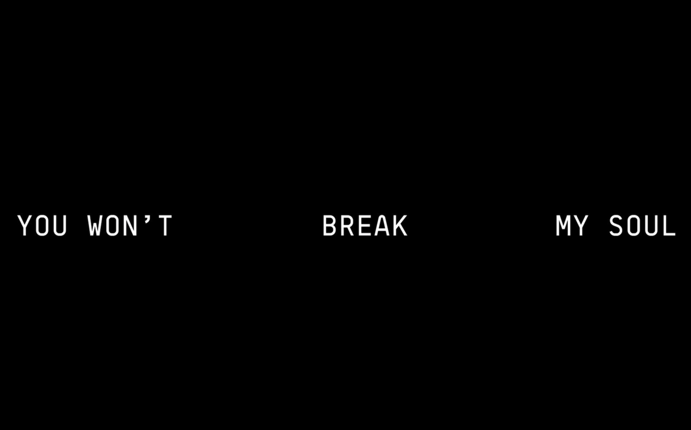

The Child of Destiny
Once upon a time, a young princess had a dream that she would one day be the Queen of All the land. She couldn't do it alone. She asked her friends to help, & they grew up snatching wigs across the land.
The princess knew that there was one more thing she would have to do to become the Queen of All...leave her friends behind to step out on her own.

True Love
Along the way, she met a prince who already fancied himself the King of Wordplay. As they would both soon learn, they still had so much growing up to do.
The prince & princess would soon join together in holy matrimony to become the offical Royal Family of the Music Industry. Beautiful babies and several major collaborative projects would soon follow.

Hope on the Horizon
A brutal disease would spread across the land forcing everyone to wear protective gear, & avoid each other at all costs. Even the Royal Family of the Music Industry would go into hiding. However, a beam of hope remained...
The Queen would broadcast a singular message to all of her loyal followers. With a single chant, the Queen would create a new inspirational anthem that would reawaken the world.
She Hath Returned
The Queen Is Back!